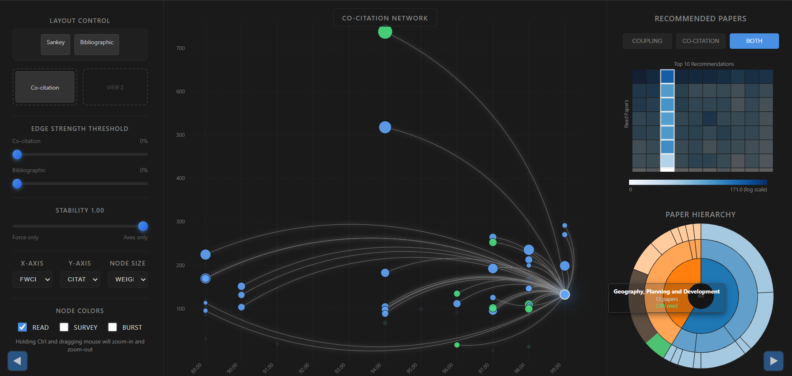
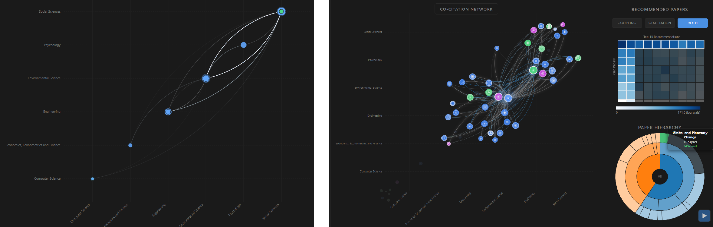
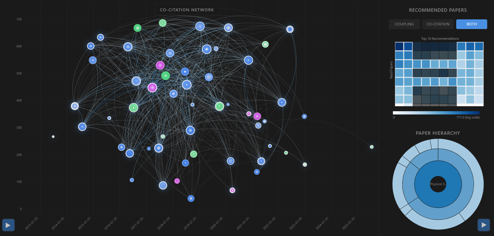

Co-Citation Visualization
Supervised by Emmanuel Pietriga
Scientific papers are closely connected, yet most search tools present them as a flat list. Inspired by GraphDice, this interactive D3.js tool models a personal paper collection through co-citation and bibliographic coupling, smoothly interpolating between attribute-driven scatterplots and force-directed networks to reveal topical clusters, cross-disciplinary bridges, and which unread papers to read next.

Overview
Built on OpenAlex metadata and citation graphs for a research reading corpus, the tool connects papers through two complementary lenses. Co-citation links two papers when later publications cite them together, showing how a community groups them over time, while bibliographic coupling links papers that share references, capturing common foundations at publication time. Users can assign attributes such as publication date, citation count, FWCI, betweenness centrality, or research field to the X and Y axes, and use a stability slider to continuously blend between a fixed attribute scatterplot (stability = 1) and a force-directed network layout (stability = 0). Selections stay linked across a Sankey diagram of cited and citing fields, a radial hierarchy of domains, fields, and subfields, and a recommendation heatmap that scores unread papers by their connection strength to the user’s read set.
Blending axis constraints with network forces exposes structure that neither view shows alone. For instance, mapping both axes to each paper’s research field at stability 1 places papers along the diagonal by discipline so cross-field co-citation links are easy to spot. Lowering stability slightly to 0.96 keeps papers anchored near their field axes while allowing co-citation forces to pull frequently co-cited works together and separate weakly related ones. This hybrid view reveals interdisciplinary bridge papers, such as those connecting Environmental Science and Social Sciences, which are simultaneously surfaced as top candidates in the recommendation heatmap.

